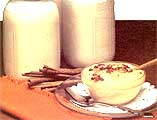

Making cheese and yogurt isn't the only method of "putting up" your surplus dairy products.
If you loathe having to fork over hard-earned cash for store-bought milk every time your dairy animals enter a dry spell, you'll be glad to know that the solution to that problem is as handy as your regular canning equipment. You see, you can store the fluid protein produced by your cow, goat, or ewe for pennies a quart . . . and then keep the sealed jars on hand for six months or more.
THE WHYS AND WHEREFORES
You might wonder why anyone would want to bother canning milk when the dairy liquid is available fresh at the grocer's any day of the week. After all, it's a well-known fact that home canning isn't the easiest of chores. Then again, perhaps it seems to you that excess milk could be put to better use as versatile yogurt and cheese.
However, if you intend to drink milk provided by your own animals when they have no fresh available, you'll just about have to can some of that spring surplus. Drying the dairy product is next to impossible . . . while either cheese or yogurt would make a lousy cup of cocoa. And although freezing is a fine way to put up homogenized milk, this procedure is less satisfactory for untreated cow's milk. When thawed, the "raw" product separates into watery liquid and flakes of milk fat. The homogenized nature of ewe's and goat's milk does make them more suited to freezing, but the amount of space you'll want to allot to frozen dairy surplus is likely to be limited.
FROM BUCKET TO BOTTLE
The method I use to put up milk is the same process that my grandmother employed . . . except that she used cow's rather than goat's milk. If you want to try this procedure, begin by sterilizing all the milking equipment by rinsing it in boiling water. (And wipe the animal's udder clean with a warm, damp cloth to prevent contaminants from falling into the milk pail.) Once the perishable commodity is safely bucketed, strain it through several layers of sterile, thickly woven, soft cotton cloth (or a sieve made especially for the task) and into a clean enamel, stainless steel, or glass container. Then cover the vessel with a clean, porous towel so that the milk will "breathe" yet remain dust-free while it cools.
At this time, check your canning jars for nicks or cracks . . . wash the containers in hot, soapy water . . . and submerge the rinsed jars in clean, hot water until you're ready to fill them with milk. You'll also need to boil the canning lids and rings in a pan of water for a few moments, then let them bathe, removed from the heat, in the sterile liquid.
Now, fill the jars, leaving 1/2" of headspace at the top of each container. (Because I like to be sure that no uninvited particles have a chance to stumble into the milk, I filter the harvest a second time during this step.) After wiping the rims with a clean, damp cloth, cap the jars with the sterilized lids and rings. When that's done, gently set the flasks on the rack of your pressure canner, add the appropriate amount of water (check the instructions that came with your cooker), and place the whole shebang over the hottest part of the stove.
Next, following the manufacturer's instructions, bring the canner to 10 pounds of pressure and process the milk for 25 minutes if you're using quarts and 20 minutes for pint-size containers. It's imperative that you pay close attention at this point: If the pressure falls below 10 pounds while the milk is being processed, you'll have to start timing all over again.
Once the jars have been boiled for the allotted period, remove the canner from the heat and let it sit untouched until all pressure has left the chamber (this usually takes an hour or so). Then set the jars in a draft-free spot on a rack, a towel, or several sheets of newspaper . . . shroud the bottles with a towel . . . and leave them "tucked in" overnight. Check the seals for leakage the next morning and store the milk on a cool, dark shelf.
Four cases of quart containers should allow a milk-loving family to get through a two-month dry spell. I bottle up a fresh supply each spring, and any milk left from the preceding year gets fed to the livestock at that time. Canned milk is marvelous for fattening a hog, and during lambing or calving season I often supplement our young farm animals' meals with the bottled product, once they've gotten their initial dose of colostrum. However, canned milk should never be the critters' complete diet, because cooking destroys some of the dairy product's nutritive value.
THE PROOF'S IN THE PUDDING
You can use processed milk in many of the same ways you'd use the fresh liquid. (It measures the same, too.) However, there are a few uses that the bottled treasure isn't so good for. When pressure canned, milk acquires a tawny hue that'll tint light-colored foods such as some gravies . . . and though this trait doesn't bother me, other folks might find it objectionable. Another persnickety problem is that-straight from the bottle-the milk has a caramel-like, cooked taste. And canned milk positively shouldn't be used for making cheeses or rennet desserts, because you won't be able to clabber the juice into curds.
Around my house, many a stored receptacle gets emptied when the family clamors for caramelly pudding. You might want to serve up the following treat to your own brood for some good eating.
CARAMELLY PUDDING
1-1/2 cups of sugar
1/3 cup of cornstarch
1 teaspoon of salt
1 quart of home-canned milk
1 teaspoon of vanilla
This is our favorite family dessert. To make it, blend the dry ingredients in a large saucepan and slowly beat in the milk. When all the fixings are moist, place the pan over medium heat until the contents come to a boil, stirring all the while to prevent the pudding from sticking as it thickens. Let the dessert simmer a moment, then remove it from the heat and stir in the vanilla. Served hot or cold, this recipe will furnish generous helpings to four people.
Canning milk isn't everyone's cup of tea . . . but for those of us who prefer to drink the wholesome product of our own animals-at times when the critters have no fresh milk available-canning is the easy, economical answer.
|
 |
|
|